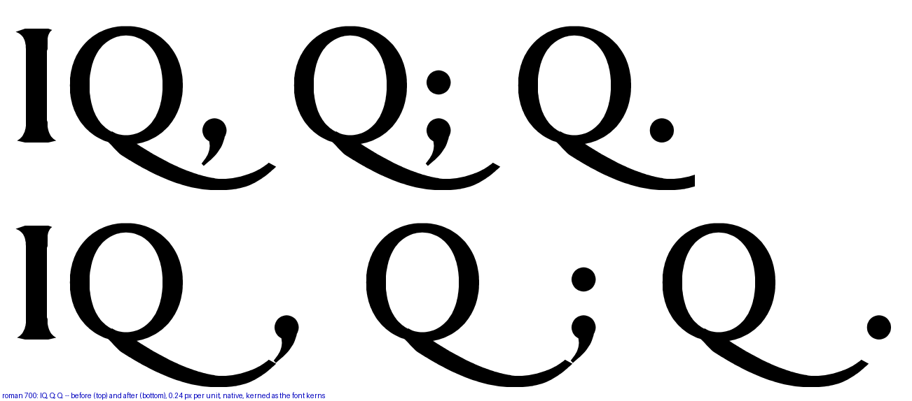
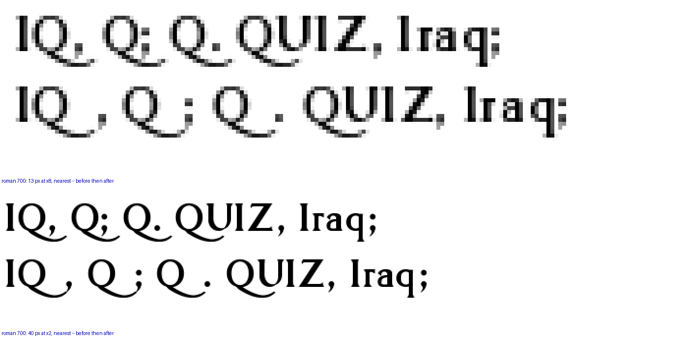
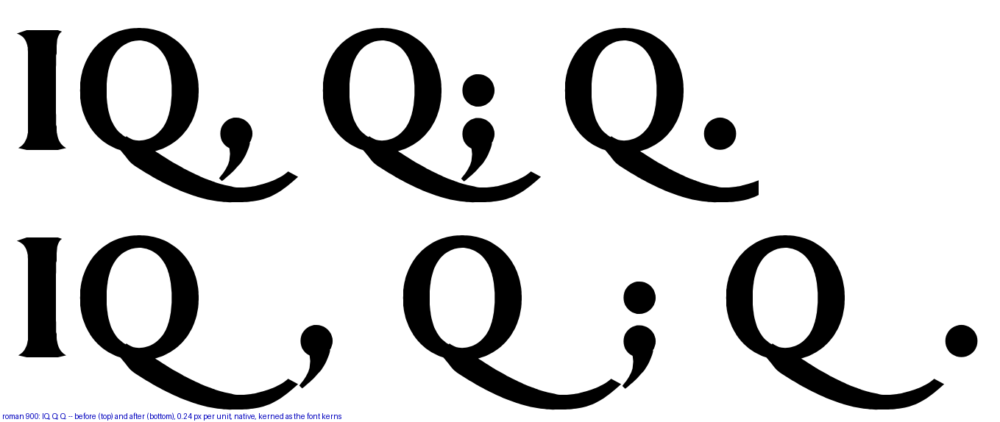
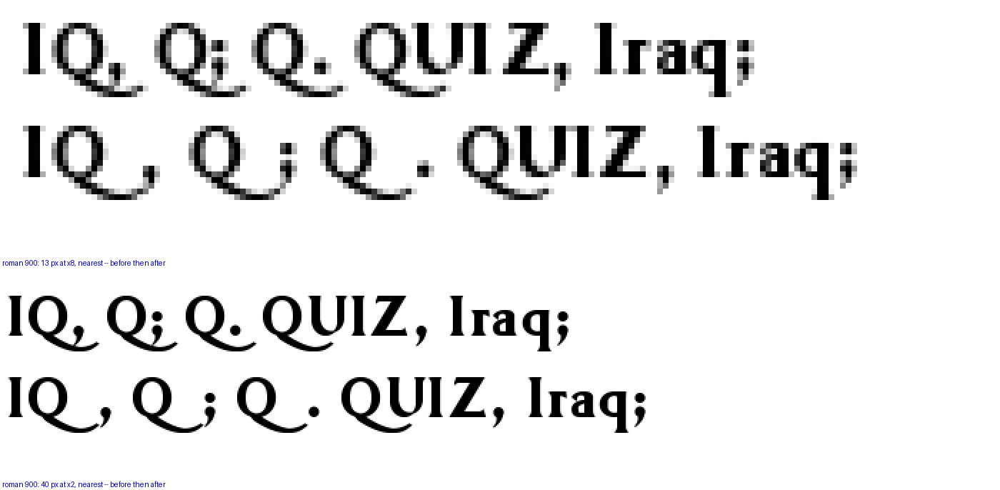

Round 280. "Kern Q against , ; ." The roman Q’s tail is unchanged (round 225: leave it long); the three punctuation marks that landed on it are now kerned clear. The kern is the measured overlap plus the floor: +430 units at the Bold 700, +456 at the Black 900. The 400 and the 200 never listed these pairs and carry no kern. Each figure: the weight before (top) and after (bottom), native pixels.
| weight | pair | before | after | kern |
|---|---|---|---|---|
| Bold 700 | Q, | touching, −0.414 | 0.016 | +430 |
| Bold 700 | Q; | touching, −0.414 | 0.016 | +430 |
| Bold 700 | Q. | under the tail | clear | +430 |
| Black 900 | Q, | touching, −0.439 | 0.017 | +456 |
| Black 900 | Q; | touching, −0.439 | 0.017 | +456 |
| Black 900 | Q. | under the tail | clear | +456 |
The touch sweep drops from 4 to 2 touching pairs at the 700 (ff fi remain, both declared) and from 5 to 3 at the 900. No glyph outline moved at either weight; the GPOS diff against the round-277 builds is exactly these three pairs per font.



